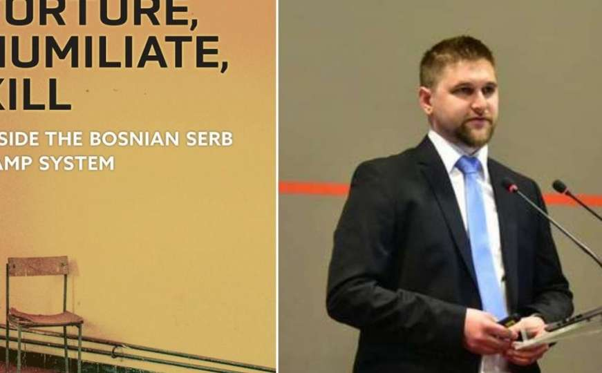

Obimno dvotomno izdanje (oko 1.400 stranica) s više od 4.500 fusnota; dokumentuje mehanizme nasilja i identitete 2.472 ubijenih i nestalih žrtava na području Zvornika (1992–1995), uključujući 392 Zvorničana ubijena u genocidu u Srebrenici. [bosna.hr]
Koautori: Emir Suljagić i Sead Turčalo; izdanje FPN UNSA (uz Srebrenica Memorial Center). Knjiga se bavi analizom presretnutih razgovora srpskih političkih elita; najavljeno je i englesko izdanje te online platforma. [Federalna/FENA]
Autori: Muamer Džananović, Jasmin Medić i Hikmet Karčić; objavljeno u izdanju Instituta za istraživanje zločina protiv čovječnosti i međunarodnog prava UNSA i Instituta za historiju UNSA. [Preporod/FENA]